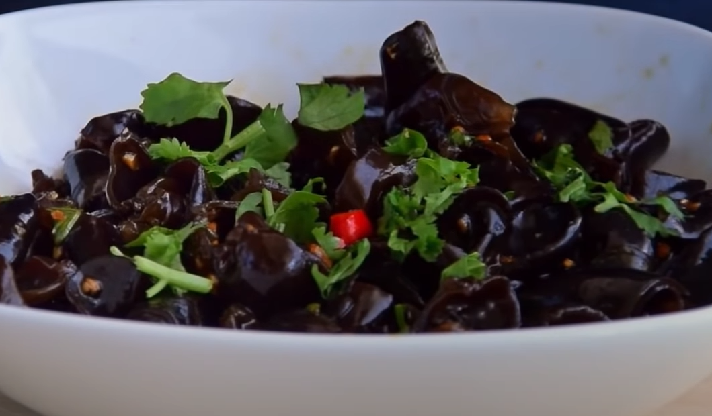

Liangban Cold Mu’er Mushrooms

Liangban(凉拌) is a chinese sauce usually used in salads or appetizers, but can be used on much more.
a savory, sweet, and salt sauce, it is perfect over many different types of vegetables, meats, and even
simply over rice. If you can't source the mushrooms this dipping sauce alone is still well worth making.
This is a simple recipe that only requires mixing of ingredients and a brief blanch of mushrooms.
The hardest part is probably sourcing all the different types of ingredients.
Ingredients
- 4 tbsp light soy sauce
- 2 tbsp dark Chinese vinegar (balsamic is okay too)
- 1 tbsp oyster sauce
- 1 tbsp sugar (you can add less depending on your tastes)
- 4 cloves of garlic
- 1 fresh heaven facing or Thai birds eye chili
- ½ tbsp toasted sesame oil
- two sprigs of cilantro
- 30 grams Mu’er Wood Ear Mushrooms
Recipe
Dipping sauce
- Slice the chilis
- Mince the garlic
- Chop the cilantro, but reserve half for later
- Mix all the sauces and oils together
- Add in the chilis, garlic, and half the cilantro. Mix again
- garnish with the other half of the cilantro when the sauce is about to be used.

"Mu'er ood Ear Mushrooms
- Reconstitute the Mu’er wood ear mushrooms in cool water. You can do this from anywhere between 30 minutes to 3 hours.
- Thoroughly rinse the Mu’er. If you Mu’er aren’t quite bite sized, rip into 2-3 pieces. (it may take multiple rinses if your mushrooms are especially sandy)
- Blanch the mu’er in boiling water for 2 minutes. After blanching, either rinse under running water or toss in a pot of cool water to stop the cooking process.
- Drain, then keep in the fridge until cool enough for you liking. Anywhere from 30 minutes to 24 hours is okay.
When you finish up the sauce and Mu'er, it's ready to eat any time, just simply combine the two and it's ready to eat!
This recipe was covered by chinese cooking demystified check them out
here!
Return to Index.